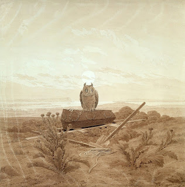

Eruvin 15 - Abaye wins
If a side-post was not erected specifically for observing Shabbat laws, but just happened to be there, will it work to permit carrying in the valley? Abaye says that it will - if they relied on it at the beginning of Sabbath - after all, they relied on it! However, Rava says that it does not help, since it was not made expressly for this purpose from the beginning. The Talmud lists a number of possible arguments pro and con, but Rava and Abaye remain unconvinced. The law, however, uncharacteristically follows Abaye - the side-post helps - and this is the "L" in the six cases abbreviated Y A L K G M where the law follows Abaye against Rava.
The side-post can be made of any material, and it can even be an animal. Here, however, Rabbi Meir disagrees - since anything that is alive cannot serve as a partition, according to him. Correspondingly, the Sages will say that an animal that is used as a coffin cover will become ritually impure, and Rabbi Meir will say that it won't. Tangentially, one can write a divorce document on an animal - but Rabbi Yose does not allow this. What are their reasons? Rabbi Yose says that the divorce document, or Get, is called in the Torah "The book (sefer) of separation." Just as a book is not alive and does not eat - so must be the material for the divorce document. And the Sages? They understand the word "sefer" as "story," which can be written on anything.
Art: Caspar David Friedrich - Landscape with Grave, Coffin and Owl